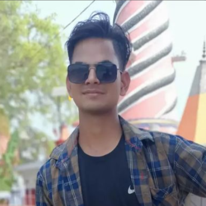
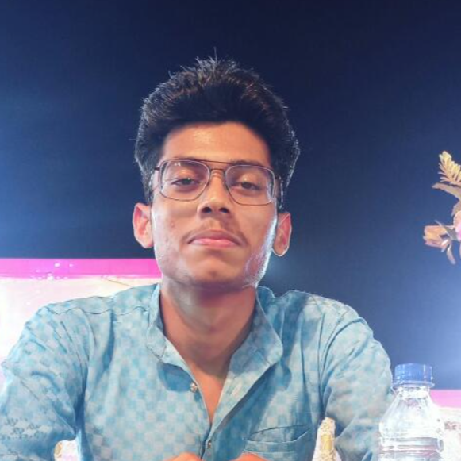
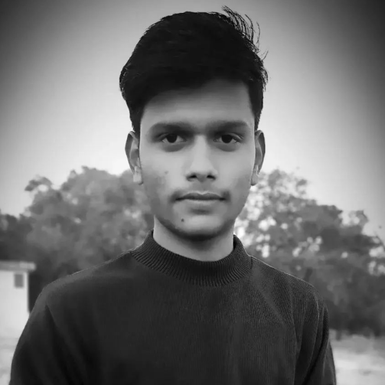
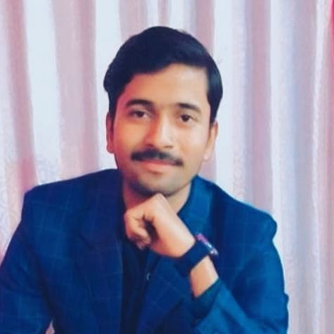
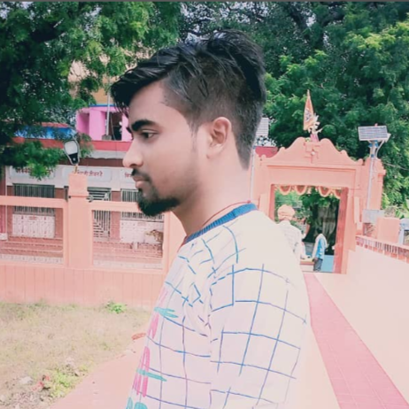
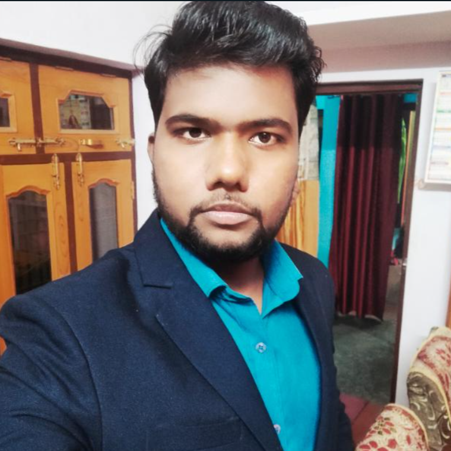
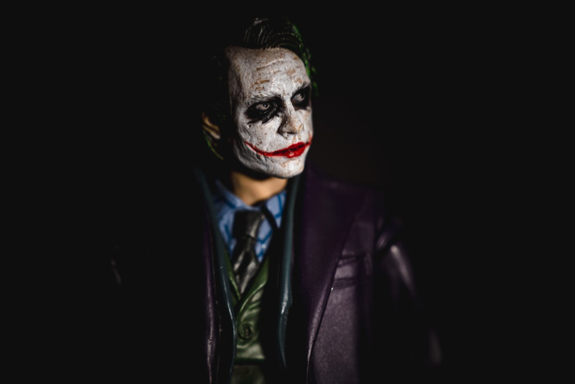
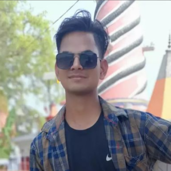
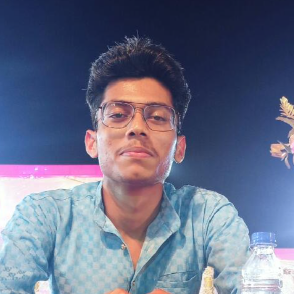
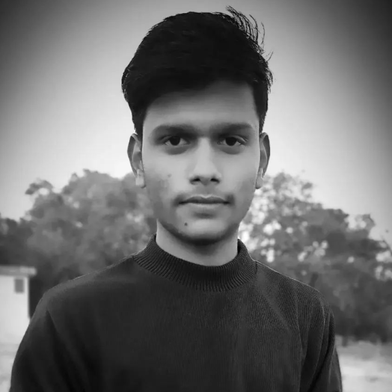
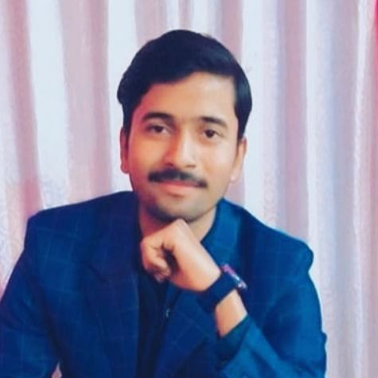
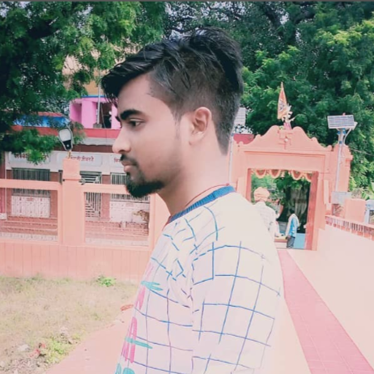
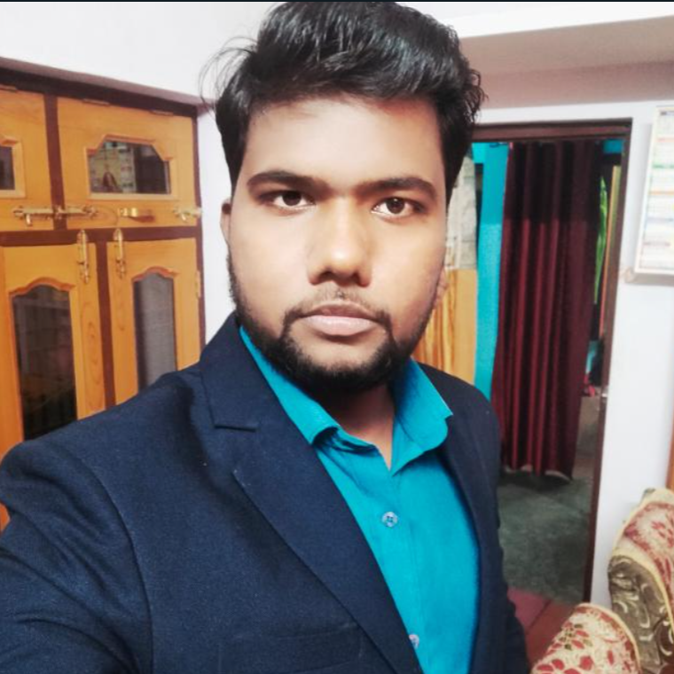
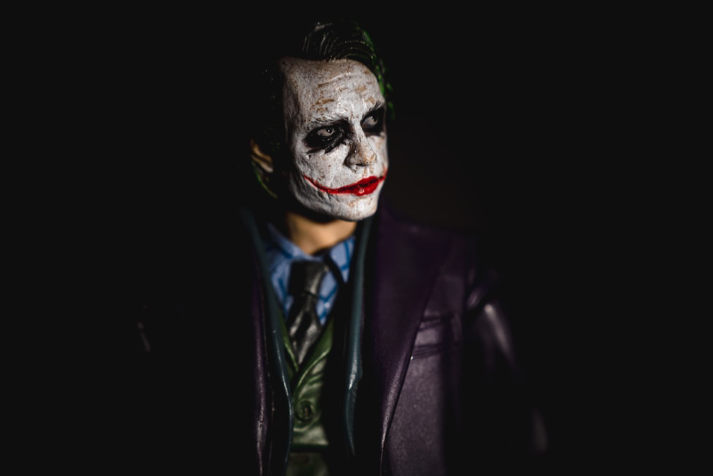
Himself, RANJEET GUPTA currently pursuing Btech course in the field of CIVIL Engineering from IIT Madras.
He is a PWD candidate.His interest is not in civil Engineering but still doing civil bcoz majboori ka naam mahatma gandhi. He is the most positive, creative person and he creats many small startup just like you tube channel and instagram pages. I hope he will be success in his life. Best Luck For Your Future.
Himself, ANURAG PATEL currently pursuing Btech course in the field of ELECTRICAL Engineering from HBTU, KANPUR.
His name was ANURAG PATEL but we called 'Chattaan' bcoz his head size is larger than the normal people. He had not any shame, how to talk people, what should talk,just open his mouth aur hagna shuru even then he was one of my friends. He had enough knowledge of history.Best Luck for yr Future.
Herself, SANA KHAN currently pursuing Btech course in the field of COMPUTER SCIENCE Engineering from Lovely Professional University.
She is the only one mahila mitra who is doing Btech but not from sliet. She is a creative girl but also depressed. Her dialogue is 'SAB MOH MAYA HAI'.She ignores failure just saying 'sab moh maya hai'.She is doing great in her future. Best Luck for yr Future.
Himself, ROHIT YADAV currently pursuing Btech course in the field of COMPUTER SCIENCE Engineering from KHAIRABAD.
His name was rohit yadav but we called 'SHETTY'. I didn't know why the friends were callimg shetty but we called.He is heighly depressed person regarding people's behaviour.He was a lean person and also my room mate.Overall we can say about him in one word 'DUKHI AATMA'. He is doing great for his future.
Himself, ABHISHEK VERMA currently pursuing Diploma course in the field of MECHANICAL from Jawahar Lal Nehru Polytechnic, Mahmudabad.
His name was abhishek but everybody in my class called him COMPAN MAMA. His body vibrated seeing red vibrating indicator,this was our hypothesis.He was the honerable student in the eye of Harishankar sir.He was the most confused person in my class even then he is.....
Himself SAURABH KUMAR currently pursuing Diploma course in the field of CIVIL from Jawahar Lal Nehru Polytechnic, Mahmudabad.
He was the shorter preson in my class so we called chhotu. I think we had met in 6th class and completed 12th together.He took charge for clicking photo 5 Rs/photo even then he is one of the person who is always ready to help of his friends.Best Luck For Yr Future
Himself, SAURABH VERMA currently pursuing Bachelor of Arts course by ENGLISH from government college. He is from Mahmudabad town. At this time he is in last year of BA.
He was the simplest person in my class and master mind of english. He had very well knowledge in english. He was the gandhi type person ek gaal kiye hai lo dusre pe bhi maar lo. He did not feight in the class.
Himself, LAVKUSH VERMA currently pursuing Btech course in the field of COMPUTER SCIENCE Engineering from LUCKNOW
He was the funniest member in my class.He was the most fattu person in my friend circle even then we called SURYAA.He lacked all the confidence in front of girl.He shares this type of memes which we can't share in public even then he is doing great for his future.
Himself, VIMLESH KUMAR currently pursuing Bachelor of Arts course from MAHMUDABAD ,SITAPUR.
I think we had met in the 6th class and he had leaved after 8th class.His writing was very good and also he was the topper in 6th ,7th ,8th class. He was a very punctual student. He loved that girl who called him VIMLESH BHAIYA.Even then he loves her ,this is called turu lobe.He is doing better in his future.
We had some other friends in our school life but they are from different stream. I don't know about them what they are doing
currently and what are their fields.Even then they were one of the best friends. Some friends- Vishnu Dixit, Udham Singh, Abhishek Maurya, Saurabh Bio, Subham Patel, Pintu, Akhilesh Sharma, Raj Kumar, Abhinav Verma, Arun, Ankit, Sanjay Gupta, Amit Kumar.